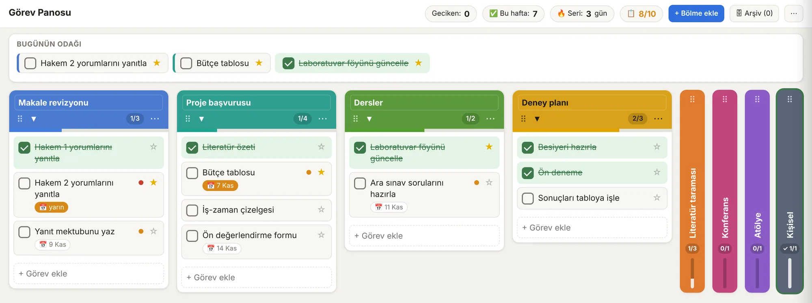

Görev Panosu
Sürüm 1.0İşlerini bölmelere ayır, son tarihleri takip et, günün odağını seç. Biten bölmeyi arşive kaldır.
Kendi çalışmam için geliştirdiğim araçları burada ücretsiz paylaşıyorum. İlki, görevlerini tek bakışta görmeni sağlayan Görev Panosu.
Tek bir HTML dosyası. Hesap, kurulum ve internet gerekmez.

Araçlar iki rafta duruyor: masa başı işler için olanlar ve laboratuvar için olanlar.
Planlama ve günlük iş
İşlerini bölmelere ayır, son tarihleri takip et, günün odağını seç. Biten bölmeyi arşive kaldır.
Laboratuvar işleri
Hazır olduğunda bu rafta yer alacak.
Sade kalması için bilerek sınırlı tutuldu. Takvim ya da proje yönetim yazılımı değil; önündeki işleri görmeni ve bitirmeni kolaylaştırır.
Her proje için bir bölme aç, başlığını ve rengini seç. Görevleri sürükleyerek sırala ya da başka bölmeye taşı.
Farklı bölmelerden en fazla üç açık görevi en üste sabitle. Bitirdiklerin gün boyunca orada kalır.
Beş bölme tam açık durur, fazlası dikey şeride döner. Aynı anda en fazla on bölme açılır; yer açmak için bitirdiğini arşive kaldırırsın.
İşaretlediğin görevin üstü çizilip yeşile döner. Bölme bitince kutlanır; haftalık sayaç ve gün serisi üstte durur.
Görevler, panoyu açtığın tarayıcının yerel hafızasında durur ve hiçbir sunucuya gönderilmez. Bu yüzden başka bir bilgisayarda ya da tarayıcıda görünmez; tarayıcı verilerini silersen görevler de silinir. Düzenli JSON yedeği indir.
Eski bilgisayarda ⋯ menüsünden yedeği indir, yeni bilgisayarda aynı menüden “Yedekten yükle” ile aç.
Dosyayı telefonun tarayıcısında açabilirsin; dar ekranda bölmeler alt alta dizilir. Telefondaki pano bilgisayardakinden ayrıdır.
Hayır. Siteye analitik veya reklam kodu eklenmedi. Sayfaları GitHub Pages yayınlıyor; GitHub normal web isteklerini işler.
GitHub Issues üzerinden bildirebilirsin. GitHub Issues sayfasını aç